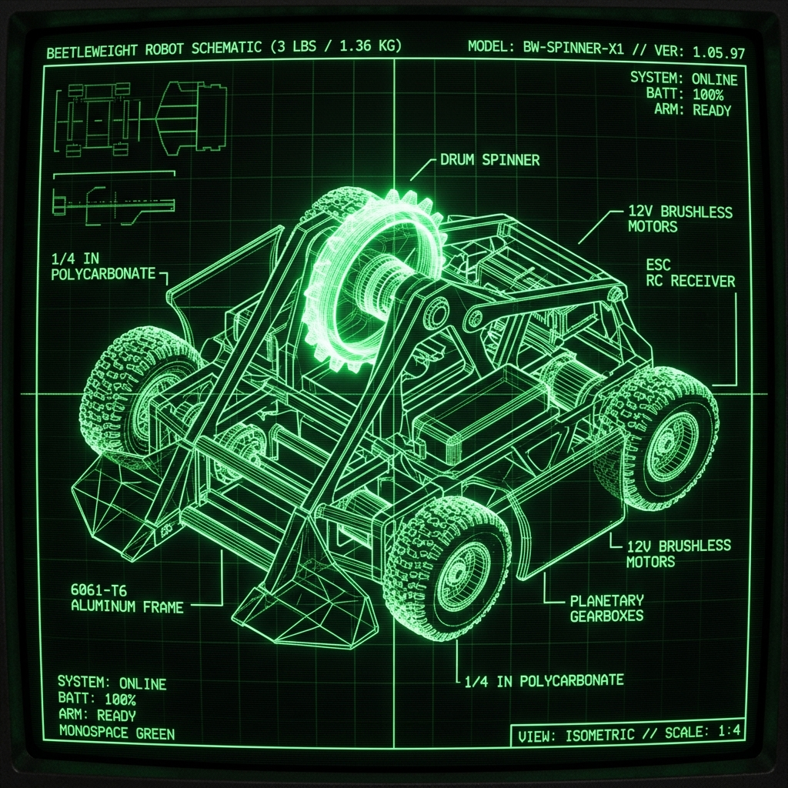

C:/Users/Miles_Keiser/Projects/
PCB/
Custom Robot Controller
USB Human Input Device Implemented with a Custom PCB
This project was my first fully solo PCB project.
Software/
sGit
Shitty Git
My first real C program. Over the course of 4 days I set out to create a program capable of basic source control. The program (sGit) works by storing the differences between a file's current state and it's state in the previous commit. These differences are stored in a text file for later reference(.sgit.txt). sGit is able to reconstruct the exact file state from just the initial state and the accumulated differences. It is currently a bare bones implementation with several significant limitations, including not being able to track files nested within the project directory and not supporting the deletion of files. Implemented commands: help, init, commit, checkout. AI Usage: No code written by an LLM. An LLM was used for help with some algorithms. AI Overview was also referenced


CAD/
Combat Robot CAD
3lb Combat Robot "Antigravity"
Engineered the complete mechanical assembly of a 3lb beetleweight combat robot. Optimized weight distribution to house a high-RPM brushless motor driving a vertical impact disk weapon. Performed Finite Element Analysis (FEA) in ANSYS to simulate weapon impact stresses and verify shaft deflection. Manufactured chassis rails from 6061 aluminum using a CNC mill.

Misc/
Early Web Engine
Retro Portfolio Theme
A lightweight, responsive portfolio website styled with early-internet aesthetics. Implemented using native details/summary components for directory-style folder navigation, avoiding heavy JS frameworks. Featuring a terminal-themed project explorer window and custom image filters.